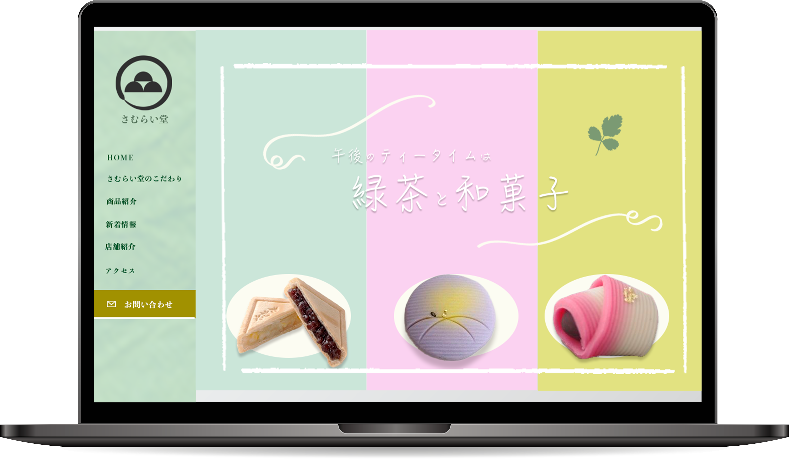

Scroll
1997年、神奈川県大和市生まれ。26歳。
大学卒業後、大手IT企業に就職。法人の営業マンとしてネットワーク機器の販売に従事。
『専門的なスキルを身につけて、誰かにとって必要とされる人材になりたい』と思うようになり
2022年8月下旬ごろからプログラミングの勉強を開始。
全くの未経験からコーディングやデザインについて学ぶ。

Design Cording
和菓子のさむらい堂（架空サイト）
著作者：rawpixel.com／出典：Freepik
Design Cording
YUTO YAMAZAKI Portfolio
著作者：rawpixel.com／出典：Freepik

Design Cording
神経衰弱
著作者：rawpixel.com／出典：Freepik

Design
トリートメントLP（架空サイト）
著作者：vector_corp／出典：Freepik

下記、フォームでお気軽にお問い合わせください。
制作のご依頼・コメントなどお待ちしております。